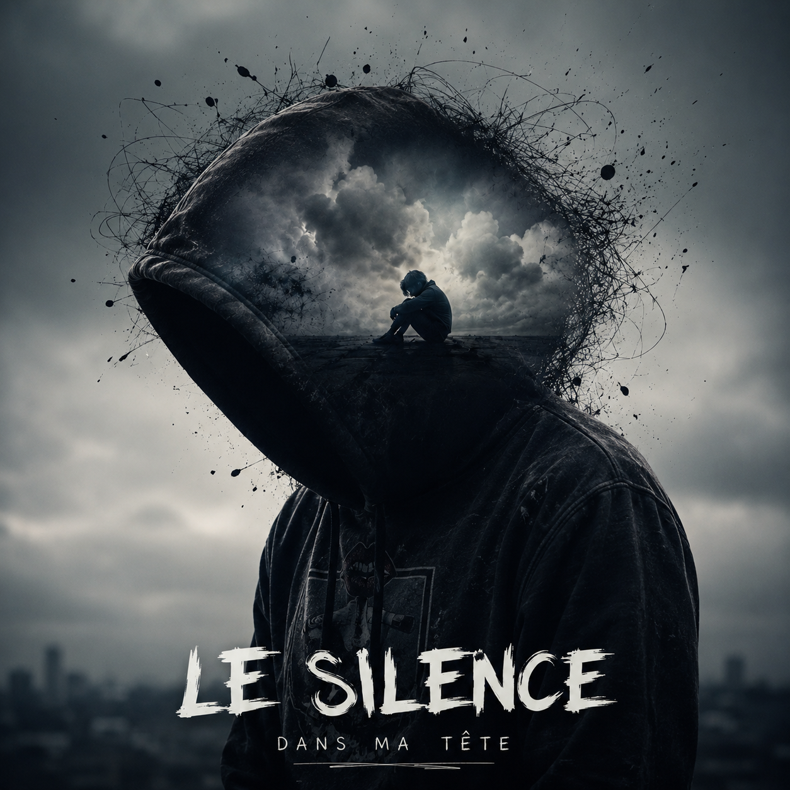
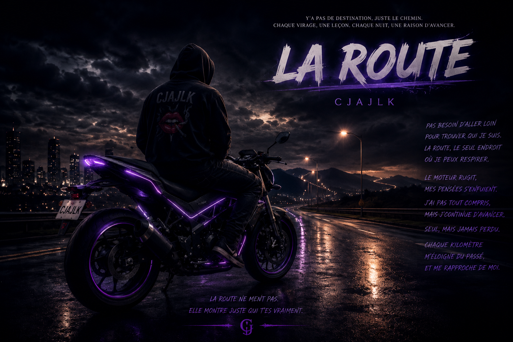
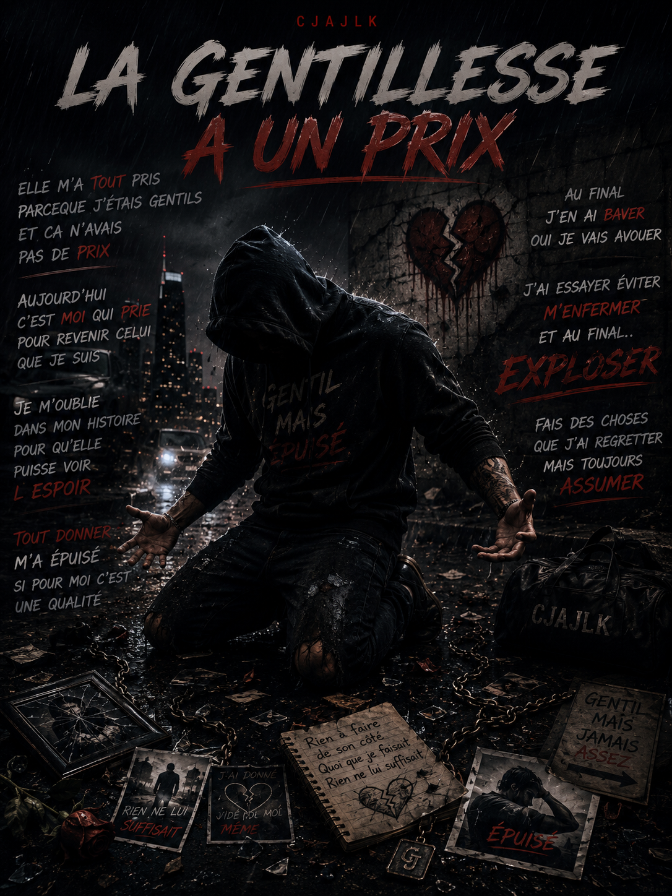
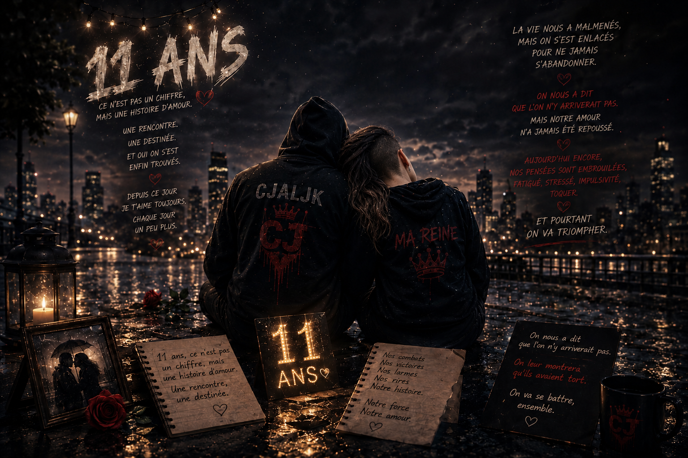
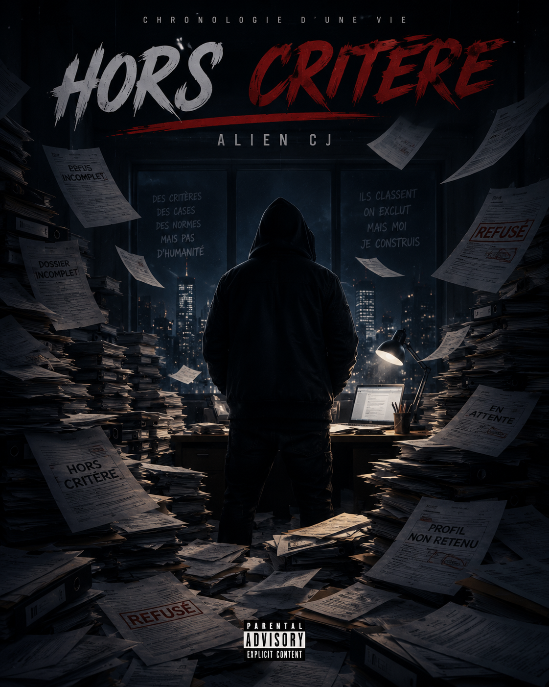

CJAJLK MUSIC

DEUX VOIX . DEUX VECUS.UNE MEME TRAVERSÉE.
DEUX VOIX . DEUX VECUS.UNE MEME TRAVERSÉE.
L'album complet regroupant tous nos titres.
Cliquer pour voir la playlist



Mélange d'émotions intenses.

Les liens qui durent.

Un cri de liberté.

Chaque étape compte.


La force de l'amour.

Un voyage sans fin.


La douceur du cœur.

Un refuge temporaire.

Une décennie de souvenirs.

Une chanson unique et singulière.
Un aveu sincère et profond.
Sensualité et passion
Derrière cet univers se trouve ma musique,
mes émotions partagées à travers des compositions authentiques.
Ici, vous ne trouverez pas simplement des chansons,
mais des fragments de vie,
des pensées,
des blessures,
des souvenirs,
de l'amour,
comme des moments à ressentir.
Chaque morceau est une traversée,
entre ombre et lumière,
mélancolie et espoir.
Entrez dans notre univers,
prenez le temps d'écouter,
de ressentir,
et peut-être de vous retrouver un peu à travers eux.
De nouvelles chansons sont actuellement en préparation.
Pour toute demande de support ou d'information, n'hésitez pas à nous contacter.
Contacter cjajlk@gmail.comCliquez sur le bouton pour ouvrir votre client email avec notre adresse préremplie.
© CJajlk Music 2026 · Tous droits réservés. TikTok YouTube Ko-fi
Explorer d'autres univers 🌙
Découvrir CJajlkGames